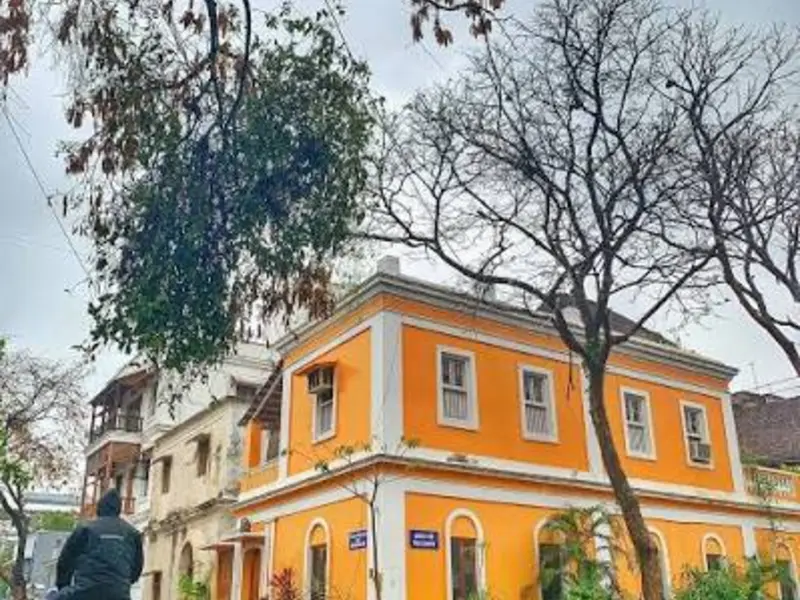
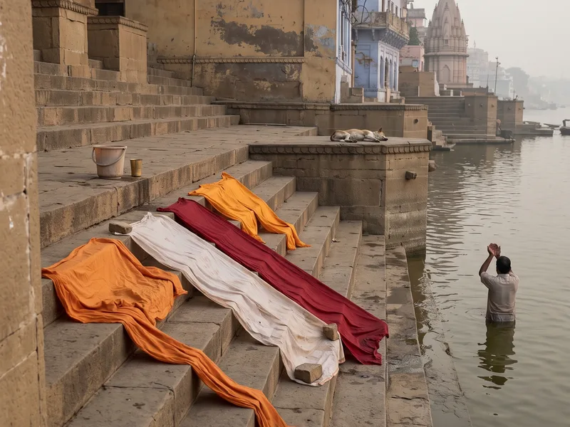

Pondicherry & the Chola Trail
Five nights from the French Quarter of Pondicherry down the Chola heartland, Auroville, Chidambaram and the great temple of Thanjavur, at the unhurried pace this coast deserves.
Most people do Pondicherry as a weekend and the Chola temples as a blur of bus windows, and end up remembering neither. The two belong together, the sea-facing calm of the French Quarter and the eleventh-century ambition of the Cholas are ninety minutes apart, and almost nobody strings them properly.
We start slow on purpose: two nights in White Town, where the mornings belong to filter coffee and rue Romain Rolland before the day-trippers arrive, and an unrushed half-day at Auroville that treats the Matrimandir viewing point as one part of the story, not the whole of it. Then we turn inland. Chidambaram's Nataraja temple at evening puja, when the dikshitars light the camphor and the crowd goes quiet, is worth the entire trip on its own. Thanjavur's Brihadeeswara we do twice, once at golden hour for the granite, once next morning for the Chola bronzes in the palace gallery, when the museum is empty.
This lands hardest for couples who like their history with good coffee and no queue-sprinting. Our escort has walked these streets and courtyards for years and knows which gate to enter Brihadeeswara by so your first sight of the vimana is head-on.
Day by day
- Day 1
Arrive Chennai, drive the East Coast Road to Pondicherry (3.5 hrs) with a mid-morning stop at Mahabalipuram's Shore Temple. Evening free on the Promenade, deliberately nothing scheduled.
- Day 2
French Quarter walk before breakfast, Sri Aurobindo Ashram, afternoon at leisure in the boutiques and cafés of White Town. Sunset from Rock Beach.
- Day 3
Morning at Auroville, visitor centre, Matrimandir viewing point, lunch at an Auroville kitchen. Afternoon drive to Chidambaram; evening puja at the Nataraja temple.
- Day 4
Drive to Thanjavur via Gangaikonda Cholapuram (the quieter of the two great Chola temples, often we have it to ourselves). Brihadeeswara at golden hour.
- Day 5
Thanjavur Palace and the bronze gallery at opening time, Saraswathi Mahal Library, afternoon with a veena maker's family. Evening free.
- Day 6
Drive to Trichy airport (1.5 hrs) for departure, with time for the Rockfort if flights allow.
What’s included
- All accommodation, 5 nights
- All breakfasts and dinners
- Private air-conditioned vehicle throughout
- Evening puja at Chidambaram and the veena workshop visit in Thanjavur
- All temple and monument entries on the itinerary
- Zubilant escort throughout
- Flights to Chennai and from Trichy
- Lunches (Pondicherry's cafés and Thanjavur's meals halls are half the fun, we point, you choose)
- Camera fees at monuments
- Travel insurance
Where you stay
In Pondicherry, a heritage house in the French Quarter, high ceilings, courtyard breakfasts, walking distance to the Promenade. In Chidambaram and Thanjavur, the most comfortable properties these temple towns offer, chosen for cleanliness, food and location over frills; we have used them for years and they know how we like things done.
Who it’s for
Couples and anyone who travels for architecture, food and slow mornings. Also works well for parents travelling with adult children. Not for beach-holiday seekers, Pondicherry's sea is for walking beside, not swimming in, and not for anyone who needs nightlife past ten o'clock.
At a glance
The facts most itineraries leave out. We print them because they are what decides whether this trip suits your group.
- Max altitude
- 85 m
- Longest drive
- 3.5 hours
- Walking
- 3–4 km/day, flat pavements and temple courtyards, some uneven granite
- Lift at every hotel
- Mostly (heritage houses in Pondicherry may not have one, tell us if stairs are an issue)
- Nearest hospital
- JIPMER, Pondicherry, within town; Thanjavur Medical College, 10 minutes
You might also like.

Odisha: Puri, Konark & the Quiet Coast
Five gentle nights through Jagannath darshan at Puri, the Sun Temple at Konark, Chilika's dolphins and the artist village of Raghurajpur, Odisha done properly, without the crowds it never gets anyway.

Lakshadweep: The Lagoon Islands
Five nights on Agatti and Bangaram, India's clearest water, entry permits handled entirely by us, and lagoons that answer the question of why anyone flies four hours further to the Maldives.

Ayodhya, Prayagraj & Chitrakoot: The Ram Path
Five nights along the Ram path, darshan at Ayodhya's new mandir, the Sangam at Prayagraj and the forest quiet of Chitrakoot, paced for elders and managed so the queues never manage you.